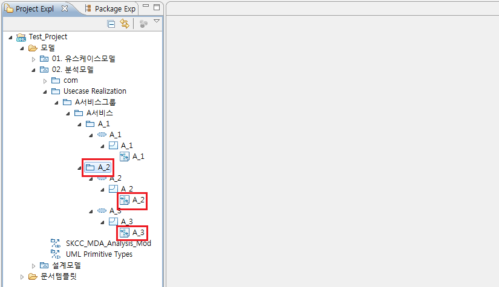

1. VOPC 다이어그램 생성
[VOPC 다이어그램 생성]은 시퀀스 다이어그램에서 클래스 정보를 추출하여 클래스 다이어그램을 생성하는 액션입니다. 액션을 실행하기 위해서는 미리 작성된 시퀀스 다이어그램이 필요하며 시퀀스 다이어그램이 존재하지 않는다면 결과물을 얻을 수 없습니다. VOPC 다이어그램의 생성하기 위해서 시퀀스 다이어그램이 존재하는 모델에서 마우스 오른쪽 클릭 후 [다이어그램 생성] > [VOPC 다이어그램]을 클릭합니다.

<그림 1. VOPC 다이어그램 생성 메뉴>
VOPC 다이어그램 생성 시 마우스 오른쪽 클릭을 실행하는 위치에 따라서 VOPC의 생성 범위가 설정되며, 모델, 패키지, Collaboration에서 생성할 수 있습니다. 예를 들어 모델에서 VOPC 생성 액션을 실행하였다면 모델 하위의 모든 시퀀스 다이어그램이 VOPC 다이어그램으로 생성되고, 특정 패키지를 선택 후 액션을 실행하였다면 해당 패키지 하위의 시퀀스 다이어그램들이 VOPC 다이어그램으로 생성됩니다.

<그림 2. 모델에서 VOPC 생성 액션 실행>

<그림 3. 패키지에서 VOPC 생성 액션 실행>
정상적으로 VOPC 다이어그램이 생성되면 다음과 같이, 시퀀스 다이어그램이 존재하는 Collaboration 하위에 VOPC 다이어그램이 생성됩니다.

<그림 4. VOPC 다이어그램 생성 완료 후>
생성된 VOPC 다이어그램은 일괄적으로 [Required Classes]라는 이름을 갖게 됩니다. [VOPC 다이어그램] 생성 액션은 반복적으로 실행이 가능하며, 추가로 생성된 VOPC 다이어그램은 'Required Classes_'에 index number가 붙은 이름을 가지고 생성됩니다.

<그림 5. VOPC 다이어그램 추가 생성>